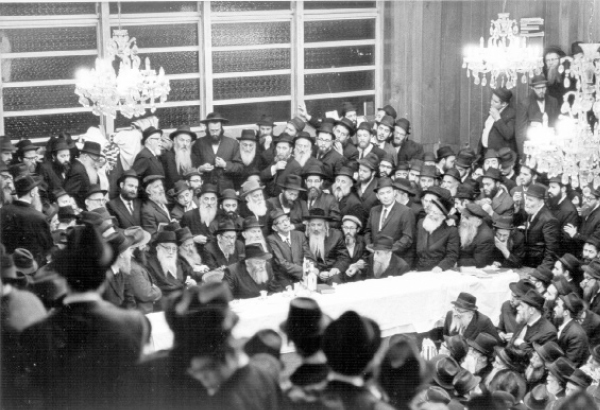

Three in the Morning on Simchas Torah
A senior journalist, who wishes to remain anonymous, visited 770 during Shmini Atzeres and Simchas Torah and shares his impressions .

I knew you’d agree with me.
So why is this written? Because at three in the morning on Simchas Torah, when feet jumped of their own accord and the body danced and the mouth sang in honor of the Torah, one of the editors of Beis Moshiach took the opportunity to ask me for a personal monograph. I nodded yes and continued dancing. In the morning, I wondered why I had made this commitment. And that is how this account got off the ground. A line written, two lines deleted that don’t sufficiently express what I want to say. Writing, deleting, more writing and deleting until it is time to submit it and the editor demands and orders me, “Write.” So I wrote, because I had committed to doing so on Simchas Torah.
Most of what I say is known to Anash; there is no chiddush. But the editor asked that it be written and I made the commitment.
It’s hard to put a finger on one incident and to say this was The Event. Because any event that you would point out is important in its own right and is an important tile in the larger mosaic. Is the fact that whoever was there on Simchas Torah in 770 sang Yechi something to marvel at? No, it is expected.
Is the fact that at the Simchas Beis HaShoeiva on Montgomery Street, thousands of Lubavitchers and hundreds of guests from other Chassidic groups participated, and they all sang Yechi, something unique? Here too, the answer is no. We know the truth, so why should we be surprised when others know it too? Truth ultimately triumphs.
There is no order to this piece so what gets written first doesn’t say anything about its importance. I remember Hoshana Raba night, when at one in the morning, after the Simchas Beis HaShoeiva, thousands of Chassidim streamed toward 770 to say T’hillim. The streets were full of thousands of Chassidim, wearing sirtuks, in an impressive parade. The sight was amazing and very moving.
On Simchas Torah itself it was hard not to be amazed by the bachurim in 770. Most of them had never seen the Rebbe. And yet, this did not diminish in the slightest their feeling about the Rebbe’s continued presence. You could see hundreds of bachurim returning after hours of walking on Tahalucha, entering the beis midrash in the middle of the hakafos and immediately joining the circles and dancing as though they had just woken up after a refreshing nap. The bachurim with their emuna swept up all the onlookers, young and old, and even seniors joined the dancing.
Earlier on, when the hakafos began, the Rebbe was honored with the recitation of “Ata Horeisa.” Thousands of people, Lubavitchers and guests, waited a few second between p’sukim and only then said it themselves. This went on and stood out throughout the month of Tishrei.
Think a moment about thousands of people who left their homes and all their affairs and came to 770. The bachurim among them came for the entire month of Tishrei; the married men – some for Rosh HaShana and others for Sukkos; some came just for Shmini Atzeres and Simchas Torah; each of them paid for a ticket and had to have a place to eat and sleep. Some of them slept on thin mattresses on the floor. Some were fortunate to have a bed in one of hundreds of homes in Crown Heights where guests were happily hosted. Some even slept on benches in the beis midrash. Although a pile of coats, hats and bags were placed on them, they managed to sleep just fine. Then there is the store of a group of newbies who slept, together with those who were mekarev them, during Chol HaMoed. Thin mattresses were placed on the floor and that is how they slept. Some of them were 45 years old. The sleeping arrangements were not particularly comfortable, but every morning, at 9:50, they arrived and prepared for davening in the Rebbe’s minyan.
I didn’t mention the large group that R’ Yisroel Halperin brought with him from Hertzliya, a motley bunch, but all of them with emuna and the heart and soul of Chassidim. You could see them farbrenging and davening together, all with great unity.
The food is another subject entirely. Hachnasas Orchim – Eshel could cross this burden off its list, because there is no guest who arrives at 770 who does not receive at least two invitations every day for meals in the sukkos of Anash. If the guest says yes, the host is thrilled. The fact that another ten guests are invited does not take away from the personal attention the host gives to each guest. Ditto for the hostess.
Sumptuous meals are served as the hosts stand ready, at their guests’ service. “Do you think it’s a little thing that they chose to be guests in my sukka?” asked one of the hosts when I expressed my surprise at the extent of his catering to the whims of his guests.
If I thought this was just one tzaddik, I soon discovered that this is the standard treatment that Crown Heights hosts provide for their guests. The special ones among them, and there are many, gives each of their guests a heartfelt thank you for honoring them with their presence.
All this is aside from the dozens of sukkos with signs that invite anybody to come in and eat. They will have a hot, nutritious meal or at least a hot coffee and homemade cake. Because the women of Crown Heights who do not cook for dozens of guests do not consider serving store-bought cake. They shudder at the thought. A young mother, who gave birth two months ago to her second child, told me, “I don’t have the strength to stand and cook meals but I must bake cake. No self-respecting balabusta in Crown Heights would serve bakery cake.” That is a direct quote.
Okay, I got carried away. Let’s go back to Simchas Torah, which is the reason for this essay. When the hakafos began, you could see the spiritedness and the enthusiasm of the crowd. At first, the circle was large. Dozens of Chassidim stood off to the side and watched the spot where the Rebbe would stand. You could see the tremendous longing to see the Rebbe once again. Not only adults stood there; there were 6 and 8 year old children too, who stood with their fathers and watched. They watched and sang, singing and dancing in their place. Their every movement stated that even if there is concealment, any minute now Moshiach will come and redeem us.
The enthusiasm and spiritedness lasted throughout the hakafos, till morning. The dancing began at 11. At 5 in the morning the dancing was still just as lively, with the same Chassidic fire. One niggun and another one. On the side you could see smaller circles of Chassidim dancing enthusiastically.
The daytime hakafos were the same; the same excitement, the same longing, the same strong desire that was expressed in the proclamation and singing of Yechi. It could go on until nighttime except there was Krias Ha’Torah, Musaf and the Rebbe’s farbrengen. The gabbaim made sure to finish the hakafos and move things along.
All the hakafos, by night and by day, are accompanied by a Kiddush in 770. Whoever returned from Tahalucha, no matter the time, found plenty of food available spread out on tables outside of 770, along with drinks. There were wine, mezonos rolls, fish, salami, fruits and drinks. In the morning it was the same, only this time the tables were inside 770.
Time passed quickly. Shortly after Shacharis there was Mincha and the Rebbe’s farbrengen. Thousands of Chassidim stood in rows, their eyes fixed on the Rebbe’s spot. A bottle of wine, a cup and a bag of challos were there. All was ready for the hisgalus.
A maamer Chassidus and then the niggunim, one niggun following another and suddenly I noticed that not only was the niggun sung in unison but the movements were also in unison; as though everyone was one body, looking at the Rebbe’s place.
Another two hours flew by. Maariv and then preparations for Shabbos B’Reishis, for “the way a person sets himself on Shabbos B’Reishis, that is how he will be all year.”
Motzaei Shabbos, some people get ready to leave for home. Parting is difficult.
Feelings are hard to substantiate, and this is a subjective piece. Not everything can be expressed; I did not see everything, but this summarizes my feelings about Simchas Torah in 770, Beis Moshiach.
Fortunate are we to have merited this.
Beis Moshiach (staff). "Three in the Morning on Simchas Torah." Beis Moshiach, no. 895 (September 17, 2013).